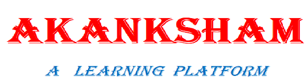

Hello!visitor my self Akanksha Mishra .Here in this web page I am introdusing you some programing language like C,C++,C#,python and java and also here we learn about HTML,CSS and javascript for web development.
Akanksham is a learnig platform where I am gives some ideas about C programing language
For making a software we need a programing language because software is a collection of programing language.
A programing is a set of instruction which is given by user or a programer according to its requirements.There are two types of programing languages.
High-level languages are designed keeping in mind the features of portability i.e. these languages are machine independent. These are English like languages, so it is easy to write and understand the programs of high-level language.For translating a high-level language program into machine language, compiler or interpreter is used. Every language has its own compiler or interpreter. Some languages in this category are-Python,Java,C,C++ and C# etc.
The languages in this category are the Machine level language and Assembly language.
The machine language consists of instructions that are in binary 0 or 1. Computers can understand only machine level language.
The difficulties faced in machine level language were reduced to some extent by using a modified form of machine level language called assembly language. In assembly language instructions are given in English like words, such as MOV, ADD, SUB etc. So it is easier to write and understand assembly programs